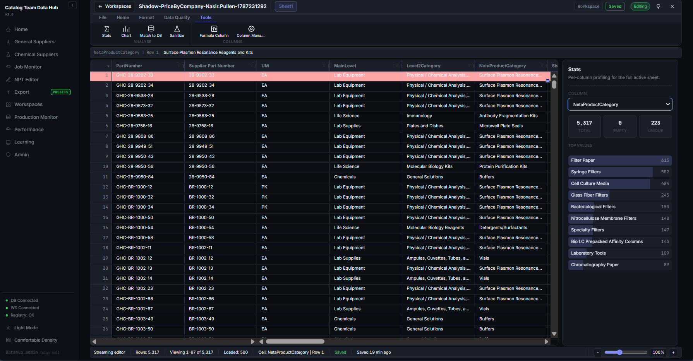
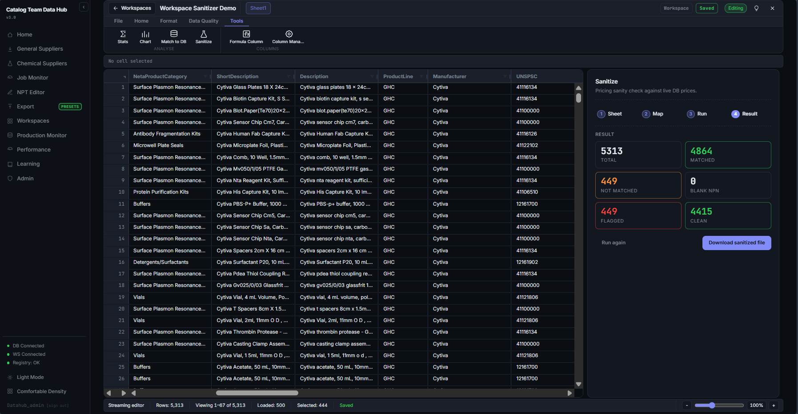
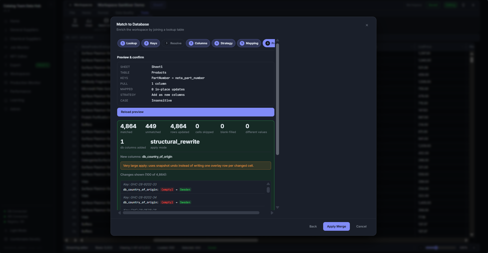
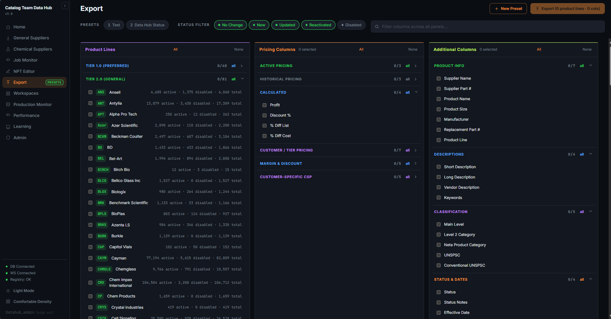
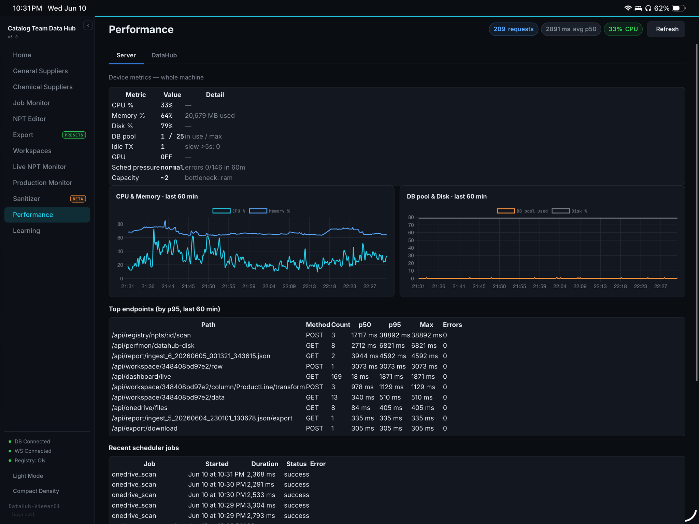
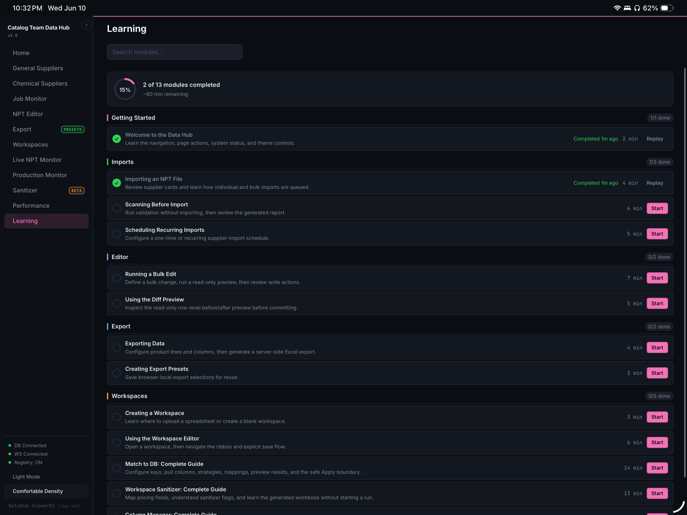
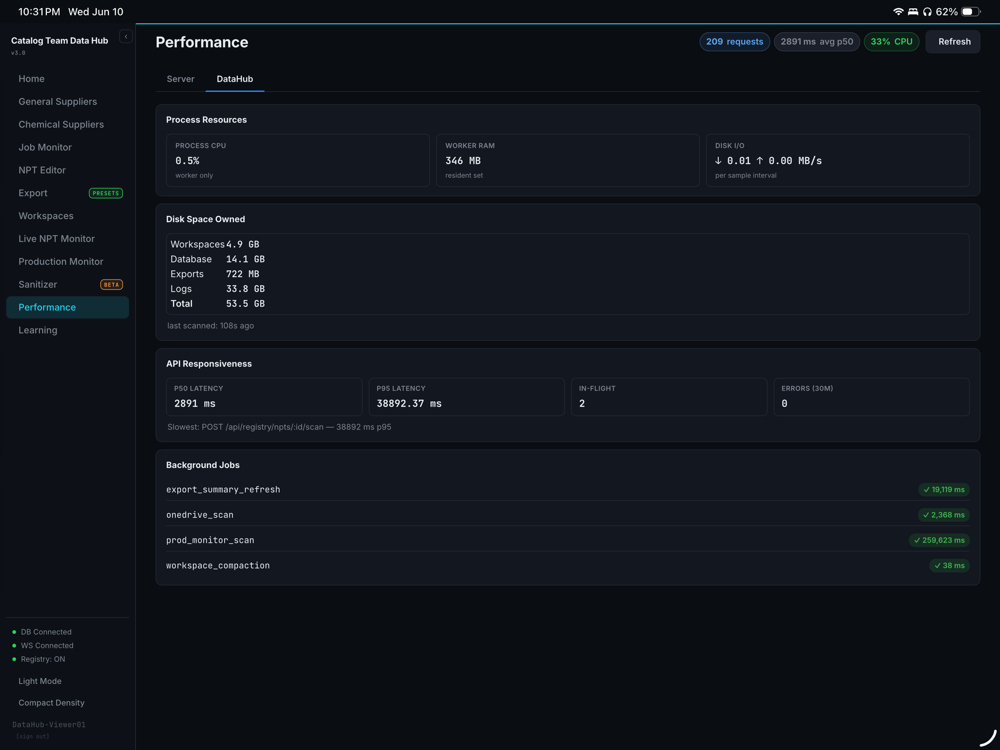

A live Microsoft Fabric platform that moves catalog data from repeatable ingestion through governed models and into team-facing Power BI experiences.
The Catalog Team DataHub began with a familiar operations problem: supplier data arrived in large, inconsistent spreadsheets, and the team spent too much time repeating cleanup, matching, validation, and reporting steps. I first addressed that workflow with a custom Python and PostgreSQL application. I have since rebuilt the platform around Microsoft Fabric so ingestion, transformation, modeling, and reporting live in one governed analytics environment.
OneLake and Lakehouse foundation
The live rebuild uses a Fabric Lakehouse as the shared data foundation. It gives the team a consistent place for incoming catalog data and the curated tables that downstream analysis relies on, while keeping the raw-to-modeled path easier to trace than a chain of hand-edited files.
Repeatable ingestion and transformation
Fabric pipelines orchestrate recurring movement and processing. Notebooks and dataflows handle transformation, validation, and shaping so the same logic can be rerun as new supplier data arrives. The result is a maintainable flow instead of one-off spreadsheet cleanup.
Governed models and reporting
Semantic models turn the curated Lakehouse data into consistent business definitions for Power BI. Reports are distributed through a published Fabric app, giving the team a single destination for the current reporting experience rather than separate exports with different assumptions.
Why the evolution matters
The earlier application taught me how catalog users work row by row: reviewing files, resolving quality issues, matching records, and preparing exports. The Fabric rebuild carries that operational understanding into a broader data-platform design built for repeatability, governance, reuse, and reporting.
Legacy application gallery
The screenshots below show the prior operational application, not the current Fabric interface. They document the workflows that informed the live Microsoft Fabric rebuild.






